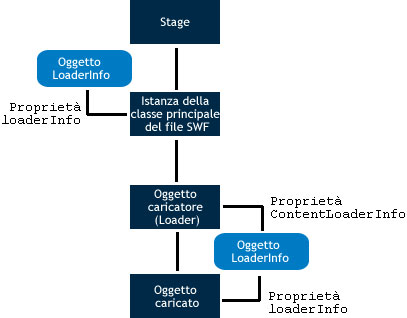

| Pacchetto | flash.display |
| Classe | public class LoaderInfo |
| Ereditarietà | LoaderInfo |
| Versione linguaggio: | ActionScript 3.0 |
| Versioni runtime: | AIR 1.0, Flash Player 9, Flash Lite 4 |
È possibile accedere agli oggetti LoaderInfo in due modi:
- La proprietà
contentLoaderInfodi un oggetto flash.display.Loader - La proprietàcontentLoaderInfoè sempre disponibile per qualunque oggetto Loader. Per un oggetto Loader che non ha chiamato il metodoload()oloadBytes(), o che non è stato sufficientemente caricato, qualunque tentativo di accesso a molte delle proprietà dicontentLoaderInfogenera un errore. - La proprietà
loaderInfodi un oggetto di visualizzazione.
La proprietà contentLoaderInfo di un oggetto Loader fornisce informazioni sul contenuto che viene caricato dall'oggetto, mentre la proprietà loaderInfo di un oggetto di visualizzazione fornisce informazioni sul file SWF principale di tale oggetto.
Quando utilizzate un oggetto Loader per caricare un oggetto di visualizzazione (ad esempio un file SWF o una bitmap), la proprietà loaderInfo dell'oggetto di visualizzazione è la stessa della proprietà contentLoaderInfo dell'oggetto Loader (DisplayObject.loaderInfo = Loader.contentLoaderInfo). Poiché l'istanza della classe principale del file SWF non dispone di un oggetto Loader, la proprietà loaderInfo è l'unico modo per accedere a LoaderInfo per l'istanza della classe principale del file SWF.
Il diagramma seguente mostra i diversi usi dell'oggetto LoaderInfo: per l'istanza della classe principale del file SWF, per la proprietà contentLoaderInfo di un oggetto Loader e per la proprietà loaderInfo di un oggetto caricato:

Quando un'operazione di caricamento non è completa, alcune proprietà della proprietà contentLoaderInfo di un oggetto Loader non sono disponibili. È possibile ottenere alcune proprietà, come bytesLoaded, bytesTotal, url, loaderURL e applicationDomain. Quando l'oggetto loaderInfo invia l'evento init, è possibile accedere a tutte le proprietà dell'oggetto loaderInfo e all'immagine caricata o al file SWF caricato.
Nota: tutte le proprietà degli oggetti LoaderInfo sono di sola lettura.
Il metodo EventDispatcher.dispatchEvent() non è utilizzabile per gli oggetti LoaderInfo. Se chiamate dispatchEvent() su un oggetto LoaderInfo, viene generata un'eccezione di tipo IllegalOperationError.
Altri esempi
Altre informazioni
Elementi API correlati
flash.display.Loader.content
flash.display.DisplayObject
flash.display.DisplayObject.loaderInfo
 Nascondi proprietà pubbliche ereditate
Nascondi proprietà pubbliche ereditate Mostra proprietà pubbliche ereditate
Mostra proprietà pubbliche ereditate| Proprietà | Definito da | ||
|---|---|---|---|
| actionScriptVersion : uint [sola lettura]
La versione ActionScript del file SWF caricato. | LoaderInfo | ||
| applicationDomain : ApplicationDomain [sola lettura]
Quando viene caricato un file SWF esterno, tutte le definizioni ActionScript 3.0 contenute nella classe caricata vengono memorizzate nella proprietà applicationDomain. | LoaderInfo | ||
| bytes : ByteArray [sola lettura]
I byte associati con un oggetto LoaderInfo. | LoaderInfo | ||
| bytesLoaded : uint [sola lettura]
Il numero di byte caricati per il contenuto multimediale. | LoaderInfo | ||
| bytesTotal : uint [sola lettura]
Il numero di byte compressi contenuti nell'intero file multimediale. | LoaderInfo | ||
| childAllowsParent : Boolean [sola lettura]
Esprime la relazione di fiducia dal contenuto (elemento secondario) al Loader (elemento principale). | LoaderInfo | ||
| childSandboxBridge : Object
Un oggetto che può essere impostato dal codice del contenuto caricato per presentare le proprietà e i metodi a cui il codice può accedere nella funzione di sicurezza sandbox dell'oggetto Loader. | LoaderInfo | ||
 | constructor : Object
Un riferimento all'oggetto classe o alla funzione di costruzione per una determinata istanza di oggetto. | Object | |
| content : DisplayObject [sola lettura]
L'oggetto caricato associato a questo oggetto LoaderInfo. | LoaderInfo | ||
| contentType : String [sola lettura]
Il tipo MIME del file caricato. | LoaderInfo | ||
| frameRate : Number [sola lettura]
La frequenza di fotogrammi nominale, in fotogrammi al secondo, del file SWF caricato. | LoaderInfo | ||
| height : int [sola lettura]
L'altezza nominale del file caricato. | LoaderInfo | ||
| isURLInaccessible : Boolean [sola lettura]
Indica se la proprietà LoaderInfo.url è stata troncata. | LoaderInfo | ||
| loader : Loader [sola lettura]
L'oggetto Loader associato a questo oggetto LoaderInfo. | LoaderInfo | ||
| loaderURL : String [sola lettura]
L'URL del file SWF che ha avviato il caricamento del contenuto multimediale descritto da questo oggetto LoaderInfo. | LoaderInfo | ||
| parameters : Object [sola lettura]
Un oggetto che contiene coppie nome-valore che rappresentano i parametri passati al file SWF caricato. | LoaderInfo | ||
| parentAllowsChild : Boolean [sola lettura]
Esprime la relazione di fiducia dal Loader (elemento principale) al contenuto (elemento secondario). | LoaderInfo | ||
| parentSandboxBridge : Object
Un oggetto che può essere impostato dal codice nella funzione sandbox dell'oggetto Loader per presentare le proprietà e i metodi a cui può accedere il codice del contenuto caricato. | LoaderInfo | ||
| sameDomain : Boolean [sola lettura]
Esprime la relazione di dominio tra il loader e il contenuto: true se hanno lo stesso dominio di origine; false in caso contrario. | LoaderInfo | ||
| sharedEvents : EventDispatcher [sola lettura]
Un'istanza EventDispatcher che può essere utilizzata per scambiare eventi tra i limiti di sicurezza. | LoaderInfo | ||
| swfVersion : uint [sola lettura]
La versione del formato di file del file SWF caricato. | LoaderInfo | ||
| uncaughtErrorEvents : UncaughtErrorEvents [sola lettura]
Un oggetto che invia un evento uncaughtError quando si verifica un errore non gestito nel codice incluso nel file SWF di questo oggetto LoaderInfo. | LoaderInfo | ||
| url : String [sola lettura]
L'URL del contenuto multimediale che viene caricato. | LoaderInfo | ||
| width : int [sola lettura]
La larghezza nominale del contenuto caricato. | LoaderInfo | ||
| Metodo | Definito da | ||
|---|---|---|---|
| addEventListener(type:String, listener:Function, useCapture:Boolean = false, priority:int = 0, useWeakReference:Boolean = false):void
Registra un oggetto listener di eventi con un oggetto EventDispatcher, in modo che il listener riceva la notifica di un evento. | EventDispatcher | |
[statico]
Restituisce l'oggetto LoaderInfo associato con un file SWF definito come oggetto. | LoaderInfo | ||
|
Verifica se per l'oggetto EventDispatcher sono presenti listener registrati per un tipo specifico di evento. | EventDispatcher | |
|
Indica se per un oggetto è definita una proprietà specifica. | Object | |
|
Indica se un'istanza della classe Object si trova nella catena di prototipi dell'oggetto specificato come parametro. | Object | |
|
Indica se la proprietà specificata esiste ed è enumerabile. | Object | |
|
Rimuove un listener dall'oggetto EventDispatcher. | EventDispatcher | |
|
Imposta la disponibilità di una proprietà dinamica per le operazioni cicliche. | Object | |
|
Restituisce la rappresentazione in formato stringa di questo oggetto, formattato in base alle convenzioni specifiche per le versioni localizzate. | Object | |
|
Restituisce la rappresentazione in formato stringa dell'oggetto specificato. | Object | |
|
Restituisce il valore di base dell'oggetto specificato. | Object | |
|
Verifica se un listener di eventi è registrato con questo oggetto EventDispatcher o qualsiasi suo antenato per il tipo di evento specificato. | EventDispatcher | |
| Evento | Riepilogo | Definito da | ||
|---|---|---|---|---|
| [evento di trasmissione] Inviato quando Flash Player o l'applicazione AIR ottiene lo stato di attivazione del sistema operativo ed entra nello stato attivo. | EventDispatcher | ||
| Inviato quando i dati sono stati caricati correttamente. | LoaderInfo | |||
| [evento di trasmissione] Inviato quando Flash Player o l'applicazione AIR perde l'attivazione del sistema operativo e sta entrando nello stato inattivo. | EventDispatcher | ||
| Inviato quando viene effettuata una richiesta di rete su HTTP ed è possibile rilevare il codice di stato HTTP. | LoaderInfo | |||
| Inviato quando le proprietà e i metodi di un file SWF caricato sono accessibili e pronti all'uso. | LoaderInfo | |||
| Inviato quando si verifica un errore di input o di output che determina l'esito negativo dell'operazione di caricamento. | LoaderInfo | |||
| Inviato quando inizia un'operazione di caricamento. | LoaderInfo | |||
| Inviato quando vengono ricevuti i dati mentre è in corso l'operazione di scaricamento. | LoaderInfo | |||
| Inviato da un oggetto LoaderInfo ogni volta che un oggetto caricato viene rimosso utilizzando il metodo unload() dell'oggetto Loader, oppure quando viene eseguito un secondo caricamento dallo stesso oggetto Loader e il contenuto originale viene rimosso prima dell'inizio del caricamento. | LoaderInfo | |||
actionScriptVersion | proprietà |
actionScriptVersion:uint [sola lettura] | Versione linguaggio: | ActionScript 3.0 |
| Versioni runtime: | AIR 1.0, Flash Player 9, Flash Lite 4 |
La versione ActionScript del file SWF caricato. La versione del linguaggio viene specificata utilizzando le enumerazioni della classe ActionScriptVersion, come ActionScriptVersion.ACTIONSCRIPT2 e ActionScriptVersion.ACTIONSCRIPT3.
Nota: questa proprietà ha sempre il valore ActionScriptVersion.ACTIONSCRIPT2 o ActionScriptVersion.ACTIONSCRIPT3. ActionScript 1.0 e 2.0 vengono entrambi segnalati come ActionScriptVersion.ACTIONSCRIPT2 (versione 2.0). La proprietà distingue solo ActionScript 1.0 e 2.0 da ActionScript 3.0.
Implementazione
public function get actionScriptVersion():uintGenera
Error — Se il file non è stato caricato a sufficienza per recuperare le informazioni richieste.
| |
Error — Se il file non è un file SWF.
|
Elementi API correlati
applicationDomain | proprietà |
applicationDomain:ApplicationDomain [sola lettura] | Versione linguaggio: | ActionScript 3.0 |
| Versioni runtime: | AIR 1.0, Flash Player 9, Flash Lite 4 |
Quando viene caricato un file SWF esterno, tutte le definizioni ActionScript 3.0 contenute nella classe caricata vengono memorizzate nella proprietà applicationDomain.
Tutto il codice presente in un file SWF viene definito come esistente all'interno di un dominio dell'applicazione. Il dominio applicazione corrente è quello in cui viene eseguita l'applicazione principale. Il dominio di sistema contiene tutti i domini delle applicazioni, compreso il dominio corrente e tutte le classi utilizzate da Flash Player o Adobe AIR.
Tutti i domini dell'applicazione, eccetto il dominio di sistema, sono associati a un dominio principale. Il dominio principale del dominio dell'applicazione principale (applicationDomain) è il dominio di sistema. Le classi caricate vengono definite soltanto se non sono già definite dal rispettivo elemento principale. Non è possibile sostituire la definizione di una classe caricata.
Per esempi di utilizzo dei domini dell'applicazione, consultate il capitolo "Ambiente del sistema client" nella Guida per gli sviluppatori di ActionScript 3.0.
Implementazione
public function get applicationDomain():ApplicationDomainGenera
SecurityError — Questa sicurezza sandbox del chiamante non è autorizzata ad accedere a questo ApplicationDomain.
|
Altri esempi
Altre informazioni
Elementi API correlati
bytes | proprietà |
bytes:ByteArray [sola lettura] | Versione linguaggio: | ActionScript 3.0 |
| Versioni runtime: | AIR 1.0, Flash Player 9.0.115.0, Flash Lite 4 |
I byte associati con un oggetto LoaderInfo.
Implementazione
public function get bytes():ByteArrayGenera
SecurityError — Se l'oggetto che accede a questa API non può accedere all'oggetto caricato a causa di restrizioni di sicurezza. Questa situazione si può verificare, ad esempio, quando un oggetto Loader tenta di accedere alla propria proprietà contentLoaderInfo.content e non riceve l'autorizzazione di sicurezza necessaria per accedere al contenuto caricato.
Per ulteriori informazioni sulla sicurezza, vedete l'argomento sulla sicurezza nel Centro per sviluppatori di Flash Player . |
bytesLoaded | proprietà |
bytesLoaded:uint [sola lettura] | Versione linguaggio: | ActionScript 3.0 |
| Versioni runtime: | AIR 1.0, Flash Player 9, Flash Lite 4 |
Il numero di byte caricati per il contenuto multimediale. Quando questo numero è uguale al valore di bytesTotal, tutti i byte sono stati caricati.
Implementazione
public function get bytesLoaded():uintbytesTotal | proprietà |
bytesTotal:uint [sola lettura] | Versione linguaggio: | ActionScript 3.0 |
| Versioni runtime: | AIR 1.0, Flash Player 9, Flash Lite 4 |
Il numero di byte compressi contenuti nell'intero file multimediale.
Prima che il primo evento progress venga inviato dall'oggetto Loader corrispondente a questo oggetto LoaderInfo, bytesTotal è 0. Successivamente al primo evento progress inviato dall'oggetto Loader, bytesTotal riflette il numero effettivo di byte da caricare.
Nota (solo per iOS): quando si esegue un’applicazione in iOS, il valore restituito non è lo stesso delle altre piattaforme.
Implementazione
public function get bytesTotal():uintElementi API correlati
childAllowsParent | proprietà |
childAllowsParent:Boolean [sola lettura] | Versione linguaggio: | ActionScript 3.0 |
| Versioni runtime: | AIR 1.0, Flash Player 9, Flash Lite 4 |
Esprime la relazione di fiducia dal contenuto (elemento secondario) al Loader (elemento principale). true se l'elemento secondario ha consentito l'accesso all'elemento principale, oppure false in caso contrario. Questa proprietà è impostata su true se l'oggetto secondario ha chiamato il metodo allowDomain() per autorizzare il dominio principale oppure se nel dominio secondario è caricato un file di criteri degli URL che autorizza il dominio principale. Se l'elemento secondario e quello principale sono nello stesso dominio, questa proprietà viene impostata su true.
Per ulteriori informazioni sulla sicurezza, vedete l'argomento sulla sicurezza nel Centro per sviluppatori di Flash Player .
Implementazione
public function get childAllowsParent():BooleanGenera
Error — Generato se il file non è stato caricato a sufficienza per recuperare le informazioni richieste.
|
childSandboxBridge | proprietà |
childSandboxBridge:Object| Versioni runtime: | AIR 1.0, Flash Player 11.4, Flash Lite 4 |
Un oggetto che può essere impostato dal codice del contenuto caricato per presentare le proprietà e i metodi a cui il codice può accedere nella funzione di sicurezza sandbox dell'oggetto Loader. Questo bridge sandbox consente al contenuto proveniente da un dominio diverso da quello dell’applicazione di avere un accesso controllato agli script nella funzione di sicurezza sandbox dell’applicazione, e viceversa. Il bridge sandbox funge da gateway tra le sandbox, fornendo un'interazione esplicita tra le funzioni di sicurezza sandbox dell'applicazione e non dell'applicazione.
Implementazione
public function get childSandboxBridge():Object public function set childSandboxBridge(value:Object):voidGenera
SecurityError — Solo il contenuto presente nella funzione di sicurezza sandbox dell'oggetto caricato può impostare questa proprietà.
|
Elementi API correlati
content | proprietà |
content:DisplayObject [sola lettura] | Versione linguaggio: | ActionScript 3.0 |
| Versioni runtime: | AIR 1.0, Flash Player 9, Flash Lite 4 |
L'oggetto caricato associato a questo oggetto LoaderInfo.
Implementazione
public function get content():DisplayObjectGenera
SecurityError — Se l'oggetto che accede a questa API non può accedere all'oggetto caricato a causa di restrizioni di sicurezza. Questa situazione si può verificare, ad esempio, quando un oggetto Loader tenta di accedere alla propria proprietà contentLoaderInfo.content e non riceve l'autorizzazione di sicurezza necessaria per accedere al contenuto caricato.
Per ulteriori informazioni sulla sicurezza, vedete l'argomento sulla sicurezza nel Centro per sviluppatori di Flash Player . |
contentType | proprietà |
contentType:String [sola lettura] | Versione linguaggio: | ActionScript 3.0 |
| Versioni runtime: | AIR 1.0, Flash Player 9, Flash Lite 4 |
Il tipo MIME del file caricato. Questo valore è null se il file non è stato caricato a sufficienza per consentire di determinarne il tipo. Di seguito sono elencati i valori possibili:
"application/x-shockwave-flash""image/jpeg""image/gif""image/png"
Implementazione
public function get contentType():StringframeRate | proprietà |
frameRate:Number [sola lettura] | Versione linguaggio: | ActionScript 3.0 |
| Versioni runtime: | AIR 1.0, Flash Player 9, Flash Lite 4 |
La frequenza di fotogrammi nominale, in fotogrammi al secondo, del file SWF caricato. Spesso questo numero è intero, ma non deve esserlo necessariamente.
Questo valore può differire dall'effettiva frequenza di fotogrammi utilizzata. Flash Player o Adobe AIR utilizza un'unica frequenza di fotogrammi per tutti i file SWF caricati contemporaneamente, e tale frequenza è determinata dalla frequenza di fotogrammi nominale del file SWF principale. Inoltre, potrebbe non essere possibile raggiungere la frequenza fotogrammi principale, a causa dell'hardware, della sincronizzazione audio e di altri fattori.
Implementazione
public function get frameRate():NumberGenera
Error — Se il file non è stato caricato a sufficienza per recuperare le informazioni richieste.
| |
Error — Se il file non è un file SWF.
|
height | proprietà |
height:int [sola lettura] | Versione linguaggio: | ActionScript 3.0 |
| Versioni runtime: | AIR 1.0, Flash Player 9, Flash Lite 4 |
L'altezza nominale del file caricato. Questo valore può differire dall'altezza effettiva con la quale il contenuto viene visualizzato, poiché il contenuto caricato dei relativi oggetti di visualizzazione principali potrebbe essere modificato in scala.
Implementazione
public function get height():intGenera
Error — Se il file non è stato caricato a sufficienza per recuperare le informazioni richieste.
|
isURLInaccessible | proprietà |
isURLInaccessible:Boolean [sola lettura] | Versione linguaggio: | ActionScript 3.0 |
| Versioni runtime: | Flash Player 10.1, AIR 2 |
Indica se la proprietà LoaderInfo.url è stata troncata. Quando il valore isURLInaccessible è true, il valore LoaderInfo.url corrisponde solo al dominio dell'URL finale dal quale il contenuto è stato caricato. Ad esempio, la proprietà viene troncata se il contenuto viene caricato da http://www.adobe.com/assets/hello.swf e la proprietà LoaderInfo.url ha il valore http://www.adobe.com. Il valore isURLInaccessible è true solo quando tutte le seguenti condizioni sono presenti:
- Si è verificato un reindirizzamento HTTP durante il caricamento del contenuto.
- Il file SWF che chiama
Loader.load()proviene da un dominio diverso dall'URL finale del contenuto. - Il file SWF che chiama
Loader.load()non è autorizzato ad accedere al contenuto. L'autorizzazione ad accedere al contenuto viene concessa nello stesso modo dell'autorizzazione perBitmapData.draw(): chiamateSecurity.allowDomain()per accedere a un file SWF (oppure, per un file diverso da SWF, definite un file di criteri e utilizzate la proprietàLoaderContext.checkPolicyFile).
Nota: la proprietà isURLInaccessible è stata aggiunta per Flash Player 10.1 e AIR 2.0. Tuttavia, questa proprietà viene resa disponibile ai file SWF di tutte le versioni quando è supportata dal runtime di Flash. Di conseguenza, l'uso di alcuni tool di authoring in "modalità rigorosa" causa un errore di compilazione. Per ovviare all'errore, usate la sintassi indiretta myLoaderInfo["isURLInaccessible"] o disattivate la modalità rigorosa. Se usate Flash Professional CS5 o Flex SDK 4.1, potete utilizzare e compilare questa API per i runtime rilasciati prima di Flash Player 10.1 e AIR 2.
Per il contenuto dell'applicazione AIR, il valore di questa proprietà è sempre false.
Implementazione
public function get isURLInaccessible():BooleanElementi API correlati
loader | proprietà |
loader:Loader [sola lettura] | Versione linguaggio: | ActionScript 3.0 |
| Versioni runtime: | AIR 1.0, Flash Player 9, Flash Lite 4 |
L'oggetto Loader associato a questo oggetto LoaderInfo. Se questo oggetto LoaderInfo è la proprietà loaderInfo dell'istanza della classe principale del file SWF, non è associato alcun oggetto Loader.
Implementazione
public function get loader():LoaderGenera
SecurityError — Se l'oggetto che accede a questa API non può accedere all'oggetto Loader a causa di restrizioni di sicurezza. Questa situazione si può verificare, ad esempio, quando un file SWF caricato tenta di accedere alla propria proprietà loaderInfo.loader e non riceve l'autorizzazione di sicurezza necessaria per accedere al file SWF che esegue il caricamento.
Per ulteriori informazioni sulla sicurezza, vedete l'argomento sulla sicurezza nel Centro per sviluppatori di Flash Player . |
loaderURL | proprietà |
loaderURL:String [sola lettura] | Versione linguaggio: | ActionScript 3.0 |
| Versioni runtime: | AIR 1.0, Flash Player 9, Flash Lite 4 |
L'URL del file SWF che ha avviato il caricamento del contenuto multimediale descritto da questo oggetto LoaderInfo. Per l'istanza della classe principale del file SWF, questo URL corrisponde a quello dello stesso file SWF.
Implementazione
public function get loaderURL():Stringparameters | proprietà |
parameters:Object [sola lettura] | Versione linguaggio: | ActionScript 3.0 |
| Versioni runtime: | AIR 1.0, Flash Player 9, Flash Lite 4 |
Un oggetto che contiene coppie nome-valore che rappresentano i parametri passati al file SWF caricato.
È possibile utilizzare un ciclo for-in per estrarre tutti i nomi e i valori dall'oggetto parameters.
Le due origini dei parametri sono la stringa di query nell'URL del file SWF principale e il valore del parametro HTML FlashVars (vale solo per il file SWF principale).
La proprietà parameters sostituisce la tecnica utilizzata in ActionScript 1.0 e 2.0, in base alla quale i parametri del file SWF vengono forniti come proprietà della linea temporale principale.
Il valore della proprietà parameters è null per gli oggetti Loader contenenti file SWF che utilizzano ActionScript 1.0 o 2.0, mentre è diverso da null solo per gli oggetti Loader contenenti file SWF che utilizzano ActionScript 3.0.
Implementazione
public function get parameters():ObjectparentAllowsChild | proprietà |
parentAllowsChild:Boolean [sola lettura] | Versione linguaggio: | ActionScript 3.0 |
| Versioni runtime: | AIR 1.0, Flash Player 9, Flash Lite 4 |
Esprime la relazione di fiducia dal Loader (elemento principale) al contenuto (elemento secondario). true se l'elemento principale ha consentito l'accesso all'elemento secondario, oppure false in caso contrario. Questa proprietà è impostata su true se l'oggetto principale ha chiamato il metodo allowDomain() per autorizzare il dominio secondario oppure se nel dominio principale è caricato un file di criteri degli URL che autorizza il dominio secondario. Se l'elemento secondario e quello principale sono nello stesso dominio, questa proprietà viene impostata su true.
Per ulteriori informazioni sulla sicurezza, vedete l'argomento sulla sicurezza nel Centro per sviluppatori di Flash Player .
Implementazione
public function get parentAllowsChild():BooleanGenera
Error — Generato se il file non è stato caricato a sufficienza per recuperare le informazioni richieste.
|
parentSandboxBridge | proprietà |
parentSandboxBridge:Object| Versioni runtime: | AIR 1.0, Flash Player 11.4, Flash Lite 4 |
Un oggetto che può essere impostato dal codice nella funzione sandbox dell'oggetto Loader per presentare le proprietà e i metodi a cui può accedere il codice del contenuto caricato. Questo bridge sandbox consente al contenuto proveniente da un dominio diverso da quello dell’applicazione di avere un accesso controllato agli script nella funzione di sicurezza sandbox dell’applicazione, e viceversa. Il bridge sandbox funge da gateway tra le sandbox, fornendo un'interazione esplicita tra le funzioni di sicurezza sandbox dell'applicazione e non dell'applicazione.
Implementazione
public function get parentSandboxBridge():Object public function set parentSandboxBridge(value:Object):voidGenera
SecurityError — Solo il contenuto presente nella funzione di sicurezza sandbox dell'oggetto Loader può impostare questa proprietà.
|
Elementi API correlati
sameDomain | proprietà |
sameDomain:Boolean [sola lettura] | Versione linguaggio: | ActionScript 3.0 |
| Versioni runtime: | AIR 1.0, Flash Player 9, Flash Lite 4 |
Esprime la relazione di dominio tra il loader e il contenuto: true se hanno lo stesso dominio di origine; false in caso contrario.
Implementazione
public function get sameDomain():BooleanGenera
Error — Generato se il file non è stato caricato a sufficienza per recuperare le informazioni richieste.
|
sharedEvents | proprietà |
sharedEvents:EventDispatcher [sola lettura] | Versione linguaggio: | ActionScript 3.0 |
| Versioni runtime: | AIR 1.0, Flash Player 9, Flash Lite 4 |
Un'istanza EventDispatcher che può essere utilizzata per scambiare eventi tra i limiti di sicurezza. Anche quando l'oggetto Loader e il contenuto caricato provengono da domini di sicurezza che non si accreditano a vicenda, entrambi possono accedere a sharedEvents e inviare e ricevere gli eventi attraverso questo oggetto.
Implementazione
public function get sharedEvents():EventDispatcherswfVersion | proprietà |
swfVersion:uint [sola lettura] | Versione linguaggio: | ActionScript 3.0 |
| Versioni runtime: | AIR 1.0, Flash Player 9, Flash Lite 4 |
La versione del formato di file del file SWF caricato. Il formato di file viene specificato utilizzando le enumerazioni della classe SWFVersion, come SWFVersion.FLASH7 e SWFVersion.FLASH9.
Implementazione
public function get swfVersion():uintGenera
Error — Se il file non è stato caricato a sufficienza per recuperare le informazioni richieste.
| |
Error — Se il file non è un file SWF.
|
Elementi API correlati
uncaughtErrorEvents | proprietà |
uncaughtErrorEvents:UncaughtErrorEvents [sola lettura] | Versione linguaggio: | ActionScript 3.0 |
| Versioni runtime: | Flash Player 10.1, AIR 2 |
Un oggetto che invia un evento uncaughtError quando si verifica un errore non gestito nel codice incluso nel file SWF di questo oggetto LoaderInfo. Un errore non rilevato si verifica quando un errore viene generato esternamente a qualsiasi blocco try..catch o quando un oggetto ErrorEvent viene inviato senza listener registrati.
Ad esempio, se in un blocco try c’è un dispatcher di eventi che chiama il gestore di eventi, il blocco catch non rileva l'errore se generato nel gestore di eventi. Ogni errore generato in seguito può quindi essere rilevato intercettando LoaderInfo.uncaughtErrorEvents
Questa proprietà viene creata quando viene completato il caricamento del file SWF associato a questo oggetto LoaderInfo. Fino a quel momento, la proprietà uncaughtErrorEvents è null. In un progetto realizzato completamente in ActionScript, potete accedere a questa proprietà durante o dopo l'esecuzione della funzione di costruzione della classe principale del file SWF. Per un progetto Flex, la proprietà uncaughtErrorEvents è disponibile dopo l'invio dell'evento applicationComplete.
Implementazione
public function get uncaughtErrorEvents():UncaughtErrorEventsElementi API correlati
Esempio ( Come utilizzare questo esempio )
uncaughtError per il rilevamento di errori non rilevati. Fornisce inoltre un pulsante che, se viene scelto, genera un errore che viene rilevato dal gestore di errori non rilevati.
Nella funzione di costruzione il codice registra un listener per l'evento uncaughtError inviato dalla proprietà uncaughtErrorEvents dell'oggetto LoaderInfo.
Nel metodo uncaughtErrorHandler(), il codice controlla il tipo di dati della proprietà error e risponde di conseguenza.
package
{
import flash.display.Sprite;
import flash.events.ErrorEvent;
import flash.events.MouseEvent;
import flash.events.UncaughtErrorEvent;
public class UncaughtErrorEventExample extends Sprite
{
public function UncaughtErrorEventExample()
{
loaderInfo.uncaughtErrorEvents.addEventListener(UncaughtErrorEvent.UNCAUGHT_ERROR, uncaughtErrorHandler);
drawUI();
}
private function uncaughtErrorHandler(event:UncaughtErrorEvent):void
{
if (event.error is Error)
{
var error:Error = event.error as Error;
// do something with the error
}
else if (event.error is ErrorEvent)
{
var errorEvent:ErrorEvent = event.error as ErrorEvent;
// do something with the error
}
else
{
// a non-Error, non-ErrorEvent type was thrown and uncaught
}
}
private function drawUI():void
{
var btn:Sprite = new Sprite();
btn.graphics.clear();
btn.graphics.beginFill(0xFFCC00);
btn.graphics.drawRect(0, 0, 100, 50);
btn.graphics.endFill();
addChild(btn);
btn.addEventListener(MouseEvent.CLICK, clickHandler);
}
private function clickHandler(event:MouseEvent):void
{
throw new Error("Gak!");
}
}
}
<?xml version="1.0" encoding="utf-8"?>
<s:WindowedApplication xmlns:fx="http://ns.adobe.com/mxml/2009"
xmlns:s="library://ns.adobe.com/flex/spark"
xmlns:mx="library://ns.adobe.com/flex/halo"
applicationComplete="applicationCompleteHandler();">
<fx:Script>
<![CDATA[
import flash.events.ErrorEvent;
import flash.events.MouseEvent;
import flash.events.UncaughtErrorEvent;
private function applicationCompleteHandler():void
{
loaderInfo.uncaughtErrorEvents.addEventListener(UncaughtErrorEvent.UNCAUGHT_ERROR, uncaughtErrorHandler);
}
private function uncaughtErrorHandler(event:UncaughtErrorEvent):void
{
if (event.error is Error)
{
var error:Error = event.error as Error;
// do something with the error
}
else if (event.error is ErrorEvent)
{
var errorEvent:ErrorEvent = event.error as ErrorEvent;
// do something with the error
}
else
{
// a non-Error, non-ErrorEvent type was thrown and uncaught
}
}
private function clickHandler(event:MouseEvent):void
{
throw new Error("Gak!");
}
]]>
</fx:Script>
<s:Button label="Cause Error" click="clickHandler(event);"/>
</s:WindowedApplication>
url | proprietà |
url:String [sola lettura] | Versione linguaggio: | ActionScript 3.0 |
| Versioni runtime: | AIR 1.0, Flash Player 9, Flash Lite 4 |
L'URL del contenuto multimediale che viene caricato.
Prima che il primo evento progress venga inviato dall'oggetto Loader corrispondente a questo oggetto LoaderInfo, il valore della proprietà url potrebbe riflettere solo l'URL iniziale specificato nella chiamata al metodo load() dell'oggetto Loader. Successivamente al primo evento progress, la proprietà url riflette l'URL finale del contenuto multimediale, dopo la risoluzione degli eventuali reindirizzamenti e URL relativi.
In alcuni casi, il valore della proprietà url viene troncato; per informazioni dettagliate, vedete la proprietà isURLInaccessible.
Implementazione
public function get url():StringElementi API correlati
width | proprietà |
width:int [sola lettura] | Versione linguaggio: | ActionScript 3.0 |
| Versioni runtime: | AIR 1.0, Flash Player 9, Flash Lite 4 |
La larghezza nominale del contenuto caricato. Questo valore può differire dalla larghezza effettiva con la quale il contenuto viene visualizzato, poiché il contenuto caricato dei relativi oggetti di visualizzazione principali potrebbe essere modificato in scala.
Implementazione
public function get width():intGenera
Error — Se il file non è stato caricato a sufficienza per recuperare le informazioni richieste.
|
getLoaderInfoByDefinition | () | metodo |
public static function getLoaderInfoByDefinition(object:Object):LoaderInfo| Versione linguaggio: | ActionScript 3.0 |
| Versioni runtime: | AIR 1.0, Flash Player 9.0.115.0, Flash Lite 4 |
Restituisce l'oggetto LoaderInfo associato con un file SWF definito come oggetto.
Parametri
object:Object — L'oggetto per cui ottenere un oggetto LoaderInfo associato.
|
LoaderInfo — L'oggetto LoaderInfo associato. Restituisce null quando la chiamata viene effettuata nelle build senza debugger (o quando il debug non è abilitato) o se all'oggetto a cui si fa riferimento non è associato un oggetto LoaderInfo (come accade con alcuni oggetti utilizzati dal runtime di AIR).
|
Genera
SecurityError — Il chiamante non è in esecuzione nella funzione di sicurezza sandbox attendibile locale.
|
complete | Evento |
flash.events.Eventproprietà Event.type =
flash.events.Event.COMPLETE| Versione linguaggio: | ActionScript 3.0 |
| Versioni runtime: | AIR 1.0, Flash Player 9, Flash Lite 4 |
Inviato quando i dati sono stati caricati correttamente. In altre parole, viene inviato quando tutto il contenuto è stato scaricato e il caricamento è terminato. L'evento complete viene sempre inviato dopo l'evento init. L'evento init viene inviato quando l'oggetto è pronto per l'accesso, anche se il contenuto può essere ancora in fase di scaricamento.
Event.COMPLETE definisce il valore della proprietà type di un oggetto evento complete.
Questo evento ha le seguenti proprietà:
| Proprietà | Valore |
|---|---|
bubbles | false |
cancelable | false; non è presente alcun comportamento predefinito da annullare. |
currentTarget | L'oggetto che elabora attivamente l'oggetto Event con un listener di eventi. |
target | L'oggetto di rete che ha completato il caricamento. |
Elementi API correlati
httpStatus | Evento |
flash.events.HTTPStatusEventproprietà HTTPStatusEvent.type =
flash.events.HTTPStatusEvent.HTTP_STATUS| Versione linguaggio: | ActionScript 3.0 |
| Versioni runtime: | AIR 1.0, Flash Player 9, Flash Lite 4 |
Inviato quando viene effettuata una richiesta di rete su HTTP ed è possibile rilevare il codice di stato HTTP.
La costanteHTTPStatusEvent.HTTP_STATUS definisce il valore della proprietà type di un oggetto evento httpStatus.
Questo evento ha le seguenti proprietà:
| Proprietà | Valore |
|---|---|
bubbles | false |
cancelable | false; non è presente alcun comportamento predefinito da annullare. |
currentTarget | L'oggetto che elabora attivamente l'oggetto Event con un listener di eventi. |
status | Il codice di stato HTTP restituito dal server. |
target | L'oggetto di rete che riceve un codice di stato HTTP. |
Elementi API correlati
init | Evento |
flash.events.Eventproprietà Event.type =
flash.events.Event.INIT| Versione linguaggio: | ActionScript 3.0 |
| Versioni runtime: | AIR 1.0, Flash Player 9, Flash Lite 4 |
Inviato quando le proprietà e i metodi di un file SWF caricato sono accessibili e pronti all'uso. Il contenuto può tuttavia essere ancora in fase di scaricamento. Un oggetto LoaderInfo invia l'evento init in presenza delle condizioni seguenti:
- Tutte le proprietà e i metodi associati con l'oggetto caricato e con l'oggetto LoaderInfo sono accessibili.
- Le funzioni di costruzione di tutti gli oggetti secondari sono state completate.
- Tutto il codice ActionScript nel primo fotogramma della linea temporale principale del file SWF caricato è stato eseguito.
Viene inviato, ad esempio, un evento Event.INIT quando viene caricato il primo fotogramma di un filmato o un'animazione. Il filmato è quindi accessibile e può essere aggiunto all'elenco di visualizzazione. È tuttavia possibile che lo scaricamento del filmato completo richieda più tempo. Event.COMPLETE viene inviato solo dopo che è stato caricato l'intero filmato.
L'evento init viene sempre inviato prima dell'evento complete.
Event.INIT definisce il valore della proprietà type di un oggetto evento init.
Questo evento ha le seguenti proprietà:
| Proprietà | Valore |
|---|---|
bubbles | false |
cancelable | false; non è presente alcun comportamento predefinito da annullare. |
currentTarget | L'oggetto che elabora attivamente l'oggetto Event con un listener di eventi. |
target | L'oggetto LoaderInfo associato al file SWF che viene caricato. |
Elementi API correlati
ioError | Evento |
flash.events.IOErrorEventproprietà IOErrorEvent.type =
flash.events.IOErrorEvent.IO_ERROR| Versione linguaggio: | ActionScript 3.0 |
| Versioni runtime: | AIR 1.0, Flash Player 9, Flash Lite 4 |
Inviato quando si verifica un errore di input o di output che determina l'esito negativo dell'operazione di caricamento.
Definisce il valore della proprietàtype di un oggetto evento ioError.
Questo evento ha le seguenti proprietà:
| Proprietà | Valore |
|---|---|
bubbles | false |
cancelable | false; non è presente alcun comportamento predefinito da annullare. |
currentTarget | L'oggetto che elabora attivamente l'oggetto Event con un listener di eventi. |
errorID | Un numero di riferimento associato all'errore specifico (solo AIR). |
target | L'oggetto di rete interessato dall'errore di input/output. |
text | Testo da visualizzare come messaggio di errore. |
Elementi API correlati
open | Evento |
flash.events.Eventproprietà Event.type =
flash.events.Event.OPEN| Versione linguaggio: | ActionScript 3.0 |
| Versioni runtime: | AIR 1.0, Flash Player 9, Flash Lite 4 |
Inviato quando inizia un'operazione di caricamento.
La costanteEvent.OPEN definisce il valore della proprietà type di un oggetto evento open.
Questo evento ha le seguenti proprietà:
| Proprietà | Valore |
|---|---|
bubbles | false |
cancelable | false; non è presente alcun comportamento predefinito da annullare. |
currentTarget | L'oggetto che elabora attivamente l'oggetto Event con un listener di eventi. |
target | L'oggetto di rete che ha aperto una connessione. |
Elementi API correlati
progress | Evento |
flash.events.ProgressEventproprietà ProgressEvent.type =
flash.events.ProgressEvent.PROGRESS| Versione linguaggio: | ActionScript 3.0 |
| Versioni runtime: | AIR 1.0, Flash Player 9, Flash Lite 4 |
Inviato quando vengono ricevuti i dati mentre è in corso l'operazione di scaricamento.
Definisce il valore della proprietàtype di un oggetto evento progress.
Questo evento ha le seguenti proprietà:
| Proprietà | Valore |
|---|---|
bubbles | false |
bytesLoaded | Il numero di elementi o di byte caricati nel momento in cui il listener elabora l'evento. |
bytesTotal | Il numero totale di elementi o byte che vengono caricati se il processo di caricamento viene completato correttamente. |
cancelable | false; non è presente alcun comportamento predefinito da annullare. |
currentTarget | L'oggetto che elabora attivamente l'oggetto Event con un listener di eventi. |
target | L'oggetto che riporta l'avanzamento. |
Elementi API correlati
unload | Evento |
flash.events.Eventproprietà Event.type =
flash.events.Event.UNLOAD| Versione linguaggio: | ActionScript 3.0 |
| Versioni runtime: | AIR 1.0, Flash Player 9, Flash Lite 4 |
Inviato da un oggetto LoaderInfo ogni volta che un oggetto caricato viene rimosso utilizzando il metodo unload() dell'oggetto Loader, oppure quando viene eseguito un secondo caricamento dallo stesso oggetto Loader e il contenuto originale viene rimosso prima dell'inizio del caricamento.
Event.UNLOAD definisce il valore della proprietà type di un oggetto evento unload.
Questo evento ha le seguenti proprietà:
| Proprietà | Valore |
|---|---|
bubbles | false |
cancelable | false; non è presente alcun comportamento predefinito da annullare. |
currentTarget | L'oggetto che elabora attivamente l'oggetto Event con un listener di eventi. |
target | L'oggetto LoaderInfo associato al file SWF che viene caricato o sostituito. |
Elementi API correlati
- Viene creata una proprietà
url, che corrisponde alla posizione e al nome del file di immagine. - La funzione di costruzione della classe crea un oggetto Loader di nome
loader. - L'oggetto
loadercrea un'istanza di un listener di eventi per garantire che l'immagine venga caricata correttamente. - La funzione di costruzione crea una nuova istanza di un oggetto URLRequest,
request, passandourlin modo che il nome e la posizione del file siano noti. - L'oggetto URLRequest
requestviene quindi passato al metodoload()dell'oggettoloader, che carica l'immagine nell'elenco di visualizzazione.
Importante: questo esempio richiede che un file di nome Image.gif venga aggiunto alla stessa directory del file SWF compilato. Utilizzate un'immagine con un'area che non ecceda le dimensioni del file SWF principale.
package {
import flash.display.Loader;
import flash.display.LoaderInfo;
import flash.display.Sprite;
import flash.events.*;
import flash.net.URLRequest;
public class LoaderInfoExample extends Sprite {
private var url:String = "Image.gif";
public function LoaderInfoExample() {
var loader:Loader = new Loader();
loader.contentLoaderInfo.addEventListener(Event.INIT, initHandler);
loader.contentLoaderInfo.addEventListener(IOErrorEvent.IO_ERROR, ioErrorHandler);
var request:URLRequest = new URLRequest(url);
loader.load(request);
addChild(loader);
}
private function initHandler(event:Event):void {
var loader:Loader = Loader(event.target.loader);
var info:LoaderInfo = LoaderInfo(loader.contentLoaderInfo);
trace("initHandler: loaderURL=" + info.loaderURL + " url=" + info.url);
}
private function ioErrorHandler(event:IOErrorEvent):void {
trace("ioErrorHandler: " + event);
}
}
}
Tue Jun 12 2018, 02:44 PM Z